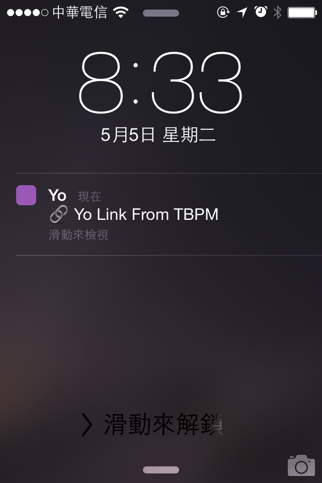

Taipei Beginner Programmers Meetup
1.安裝 Yo App
http://goo.gl/KdUyMr (ios)
http://goo.gl/mYQqVm (android)
2.將 'TBPM' 加入朋友
3.Meetup活動有新留言時，就會收到Yo，打開Yo APP 就自動導向該活動meetup頁面

Taipei Beginner Programmers Meetup
Facebook Page